welcome to a soft little world
兩隻兔子 & one tiny world
DUNNBO 是一隻溫柔慢半拍的白兔，
MOORO 是她最好的朋友，迷糊隨性的默默兔。
一起發呆、一起吃零食、一起製造小麻煩。
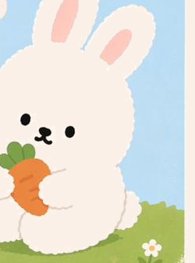
DUNNBO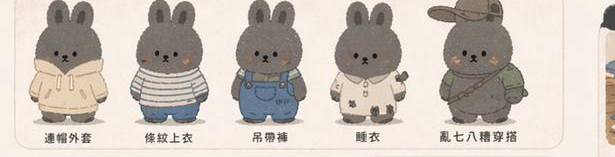
MOORO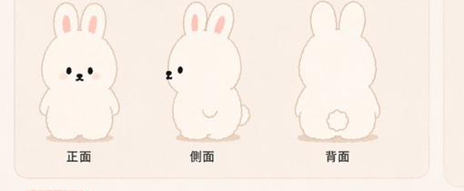
— daily moments —
welcome to a soft little world
DUNNBO 是一隻溫柔慢半拍的白兔，
MOORO 是她最好的朋友，迷糊隨性的默默兔。
一起發呆、一起吃零食、一起製造小麻煩。

DUNNBO
MOORO
— daily moments —
— meet the friends —
兩個性格完全相反的好朋友
白白兔
→默默兔
→No. 01
白白兔
「我可以哭一下下嗎？」
情緒就像天氣，一下下就過去了。
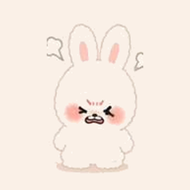


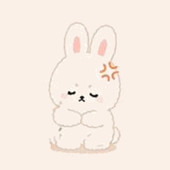
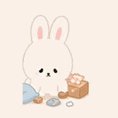


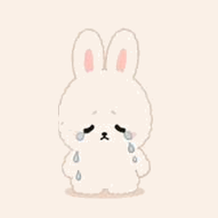
五種模式，五種心情。
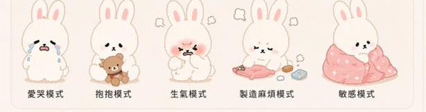

No. 02
默默兔
「沒事的，繼續做自己。」
隨便啦，今天也很開心。
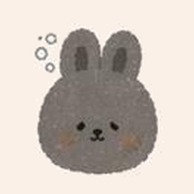
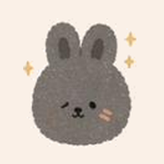
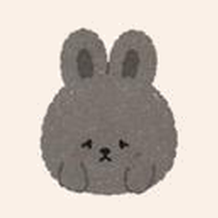

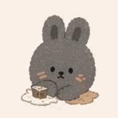
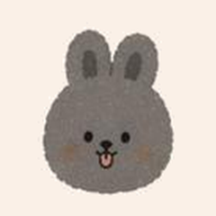
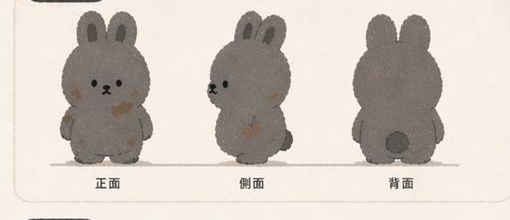

日常穿搭，怎麼舒服怎麼穿。
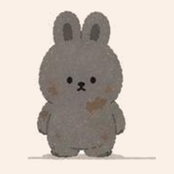
— our little story —
兩隻兔子，一個小小村
01
DUNNBO 喜歡在草地上發呆，抱著胡蘿蔔可以坐一整個下午。 MOORO 的房間永遠亂七八糟，但他從來不在意。
看起來完全相反的兩個人，卻是彼此最好的朋友。
02
DUNNBO 哭的時候，MOORO 不會多說什麼，只是默默坐在旁邊。 MOORO 找不到東西的時候，DUNNBO 會幫他一起翻房間。
有時候，理解一個人不需要太多話。
03
就是一起耍廢、一起吃零食、一起睡到天黑。
願你也有一個這樣的朋友 — 不完美，但剛剛好。
— daily moments —
小小村裡每天發生的小劇場

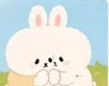
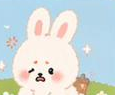

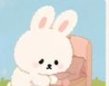
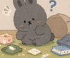
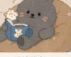
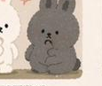

— say hi —
想合作、聊聊或只是想說聲嗨
歡迎合作邀約、商品授權、聯名提案，或單純打個招呼也好。